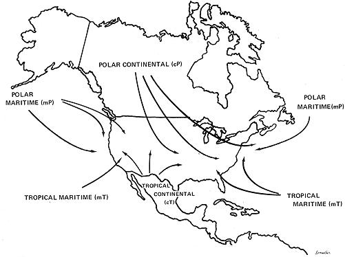
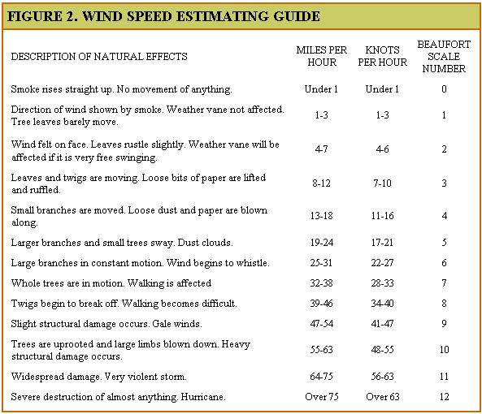
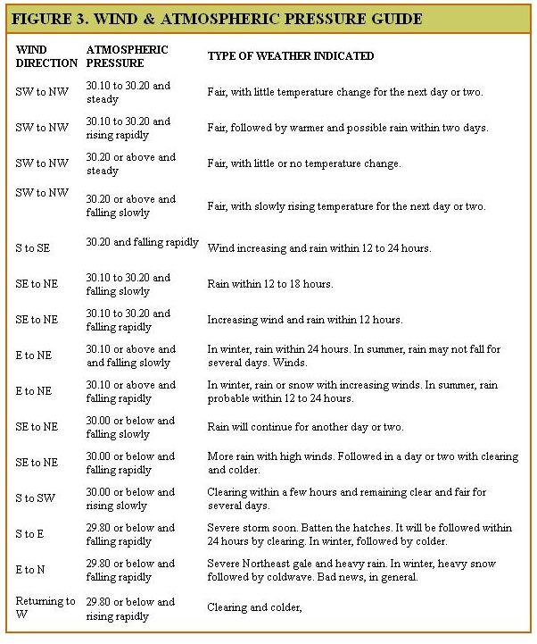
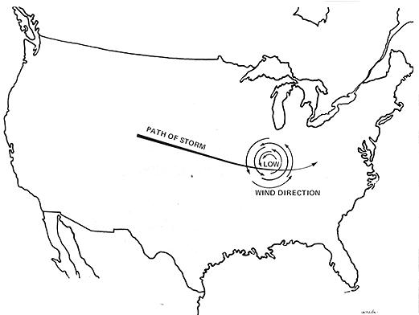
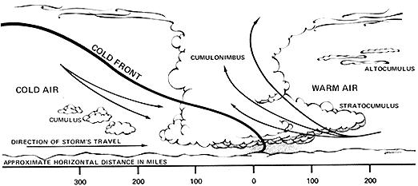
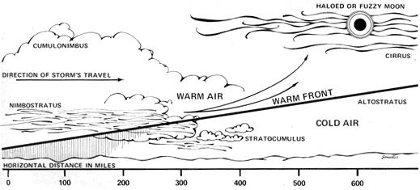
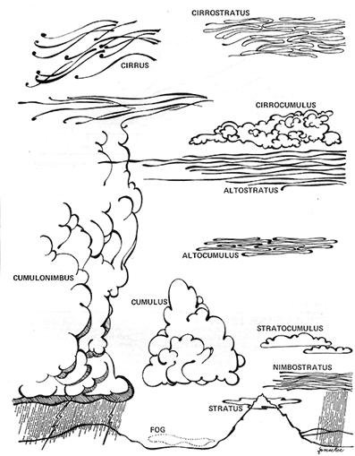
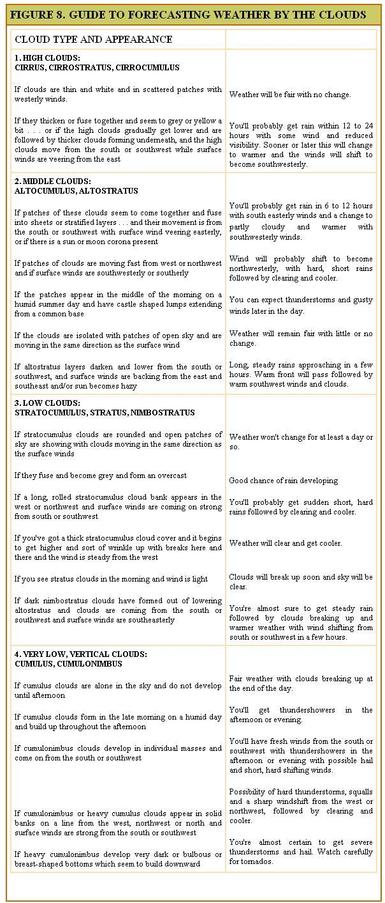

Men judge by the complexion of the sky
The state and inclination of the day . . .
RICHARD II, ACT 2
O ye hypocrites, ye can discern the fact of
the sky; but can ye not discern the signs
of the times?
MATTHEW, 16
When you're into farming it seems like all you do is wait for it to rain or wait for it to stop . . . and even if you're city-bound, a lot of what you do depends on the weather. While some folks argue that we ought to take pleasure in whatever the climate brings, there are times when its nice to know in advance what ol' Mother Nature has in store for tomorrow or next Wednesday . . . and that can be arranged quite easily once you know the secrets of down-home weather forecasting.
To an extent, you know, we're all weather forecasters already. If the clouds are dark and heavy and the wind feels and smells a certain way, we assume its going to rain. And it usually does. Complete, accurate weather projections are just an extension of this. We observe and we draw conclusions from our observations.
Here, then, are some bits and pieces of scientific information, weather lore and personal observation to help you to know what to look for and what conclusions to draw. With a little practice you'll find that you, too, can become just about as accurate as the official weather forecaster on whom you probably now rely. It'll be one more apron string that you can let go of . . . and one more step toward independence.
WHERE WEATHER COMES FROM
The first thing you'll need to know is a little about how weather works and the bare essentials can be explained quite simply: everything is caused by air masses. Meteorologists would probably recoil in horror at that simplification, but there it is.
These air masses are great lumps of atmosphere with fairly uniform temperature and moisture characteristics. They form over certain areas of the earth's surface (known as source regions), acquiring the temperature and moisture characteristics of the parent region in the process. These huge chunks of air are classified by temperature and moisture and named for the source area over which they form (Fig. 1).
There are four basic types of air masses: Warm and Dry (Tropical Continental, indicated by the symbol cT); Warm and Wet (Tropical Maritime, mT); Cold and Wet (Polar Maritime, mP); Cold and Dry (Polar Continental, cP). The maritime air masses (those originating over the ocean) are sometimes subdivided and given names such as Gulf Tropical, Atlantic Tropical, Atlantic Polar, Pacific Tropical and Pacific Polar . . . all with appropriate symbols. The names really aren't very important though, just the characteristics.
Now these monster globs of air hang around their source regions awhile, then-for reasons that no one seems to entirely understand-they break loose and go rolling across the surface of the planet in fairly regular patterns. During this migration they sometimes overrun, push into and otherwise collide with other great chunks of atmosphere of the same or sharply differing characteristics.
The edges of the air masses are called fronts and the edge of another is called a frontal zone (or frunnelzone, as they say on the six o'clock news). It's along these frontal zones that most storms and atmospheric changes occur.
Alright. We now know that gigantic hunks of air form, move across and collide on the earth's surface . . . and we have a name for that activity. We call it weather. It stands to reason, then, that all you have to do to forecast the weather is to learn to tell which air masses are where and the probable direction and speed in which they're headed.
I might mention, in passing, that the Polar Continental (cP)-a great, cold, dry air mass that forms over the interior of central Canada-is the major influence in the weather for all the central and eastern United States. Psych that one out and you've gone a long way toward predicting the climate for half the country.
THE WEATHER DIARY
One of the handiest and most basic (also one of the most overlooked) weather forecasting tools of all is a daily weather diary. Each day, make notes on the wind direction and speed, temperature, humidity and precipitation, cloud cover and all other weather signs and-after a month or so-you'll begin to notice and understand the exact conditions in your locality that exert certain influences over following weather.
Remember that-no matter what an overall forecast might be-each little local area has peculiarities all its own. Until you're familiar with the quirks of your particular locality, your weather predictions are apt to be just so-so. Once you've become acquainted with the real climatic character of your region, however, the accuracy of your forecasts is certain to take a healthy jump upward.
There's another point in favor of the diary: once in a while the weather becomes so uncertain that, as the oldtimers say, "All signs fail". When that happens, you can sometimes still make a better-than-average forecast by going back over your diary and looking for similar conditions. Weather has a way of repeating itself pretty consistantly.
RAW MATERIALS FOR THE DIARY AND FORECAST
Weather changes are almost always preceded by changes in temperature, air pressure, humidity, wind speed, wind direction, cloud formations or by combinations of such events. These are the signs we must learn to observe and evaluate and, since some of the changes in these signs are too subtle to be directly sensed and accurately judged by most of us mere humans, we've got to rely on certain measuring devices.
These devices can be natural (like birds, insects, animals and plants) or mechanical (thermometers, barometers, anemometers and such). People who use one type of indicator sometimes scorn those who use the other but the folks who really know what the weather's going to be use a little of both.
MECHANICAL DEVICES
While it's possible to learn to judge temperature and barometric pressure pretty accurately by natural signs alone, a thermometer and a barometer are very handy and inexpensive to obtain. Come to think of it, outside of a weather vane and one or two other instruments you can make at home, a thermometer and a barometer are about the only store-bought or man-made weather detectors that are really essential.
Of course-if you're into a heavy science and technology thing, have a fetish for dials and knobs and money's no object-you can purchase all manner of measuring devices which have remote sensors connected to big, official-looking dials. Mounted on the wall of your den or study, these dials will give you constant readings of wind direction, wind speed, barometric pressure, temperature and most anything else you want to know. You can even get instruments that chart continuous graphs on strips of paper and make your friends very nervous . . . and you can set up your own complete weather station for about $600.00. Personally, however, I don't feel that such elaborate rigs are necessary.
NATURAL SIGNS AND PORTENTS
The first thing to consider when brewing up a home-grown weather forecast is wind direction and strength. The wind direction, incidentally, is named for the direction from which the wind is coming . One that blows from west to east is a westerly wind. This may seem a bit obvious to some, but I always have trouble remembering it. A good, free-swinging weather vane is handy, easy to build and mandatory if you have a barn roof without one.
In the United States, the prevailing wind is westerly. In the summer, it's frequently southwesterly and in the winter, northwesterly . . . but, nevertheless, westerly.
A prevailing wind indicates fair weather and a non-prevailing wind (one that comes from another direction) signals the approach of a storm, due to the counter-clockwise circulation of winds around a low pressure-or storm center-area.
As a storm center approaches, you'll notice the wind begin to change from westerly to southwesterly to southerly. This is called a backing wind . When the low pressure air mass is directly over you, the winds will continue to change (this time to northerly or easterly, depending on where you are in relation to the storm) and these are called veering winds . And as the center continues eastward past you, the winds return to their prevailing westerly direction.
All storms in the northern hemisphere revolve counter-clockwise around a central low pressure area this way so-if you face into the wind and point to your right-you'll always be pointing toward the nearest storm center or low pressure area.
This wind activity is neatly summed up in an old weather proverb:
When the wind is in the south,
The rain is in its mouth.
When the wind is in the east,
It's neither good for man nor beast.
The wind in the west
Suits everyone best.
By the way, the backing winds mentioned above frequently cause the leaves of trees to curl and show their undersides . . . so, when the oldtimers say they can look at a tree and see a storm approaching, they're not joshing. Now that you know the secret, you can predict heavy weather the same way. Atmospheric pressure is another good indicator of weather activity. Simply knowing the atmospheric pressure (also called the barometric pressure) at any given moment, however, is about as useful as knowing the time on a stopped clock. Unless you know what the pressure has been over a period of time, whether it's been rising or falling and if its action has been fast, slow, regular or erratic . . . you really can't use atmospheric pressure to predict anything.
To use a barometer (the standard instrument for measuring atmospheric pressure) most effectively, then, we should note its reading every hour or so. Better yet-according to those who love to play with gadgets-is a recording barometer that traces every little change on a graph. Most of us, though, find it quite sufficient to have a simple little $1.98 barometer hung on the back porch for a quick glance first thing in the morning, last thing at night and as we come in from the fields for our mid-day meal.
There are a good many natural signs that indicate changes in atmospheric pressure, too. Some are quite obvious and others are pretty subtle. For instance-due to the drop in pressure that preceeds rain or a storm-birds and animals become restless, uneasy, more active and noisy. Flying insects swarm and seem more numerous and annoying. Smoke rises slowly and may even droop slightly. Bees stay closer to the hive. Swallows and bats fly very low. Ants get unusually busy and scurry about moving their eggs from place to place. Sound travels much further during a low and smells seem much stronger as the lesser atmospheric pressure allows the earth to release more of its odors.
Sound traveling far and wide.
A stormy day will betide.
When the atmospheric pressure rises-particularly if the increase is the result of a great polar continental high out of Canada-the stale smell in swamps and ditches will diminish, giving the air a fresh (almost neutral) smell. Smoke rises straight up to great heights and birds fly high. Fish become more active and swim nearer the surface (it's a good time to go fishing). During the winter, the ice on frozen ponds and lakes will begin to crack and boom during periods of rising pressure. People seem happier and friendlier also and, if you've got business to do or something to sell, this is the time to do it. Many other natural weather signs are activated by changes in atmospheric pressure. For instance, rain is indicated by the flowers of the chickweed if they're closed in the morning; if they're open, the day will be fair. Some forecasters state that gentianella and pimpernel give the same predictions but, since I've never seen either plant, I can't confirm it. I do know that old houses, old furniture and old people will creak and groan with a pressure change either way.
Clouds can generally be relied upon to tell you what sort of air mass surrounds you and what kind of air mass is on the way (see Figure 8) . . . and the two cloud types most useful for predicting the weather are cumulus and stratus. Various clouds of the cumulus family are associated with cold air masses or cold fronts (see Figure 5) and usually indicate the possibility of short, hard rains followed soon by clear skies and fair weather. The higher the cumulus clouds behind the front, the longer and drier the clear spell will be.
CIRRUS: Very wispy, feathery clouds which form at great heights. Due to this height, cirrus are the first clouds to color before sunrise and the last to darken at sunset.
CIRROSTRATUS: Veil the sky with the thin, overall whitish haze which produces a halo around the sun or moon. Cirrostratus clouds with wispy, defined edges are often called "mares tails".
CIRROCUMULUS: Resemble cirrus clouds but are sort of tufted or rippled like sand on a beach. Cirrocumulus are clouds of the "mackerel sky".
ALTOSTRATUS: Similar to cirrostratus, but more dense. This denseness causes the soft-edged corona around the sun or moon.
ALTOCUMULUS: One form of altocumulus, called "sheep backs", looks like a layer of cotton balls and a second form has the appearance of long rolls or bands of cotton bunched together. The regular, parallel bands of the second form are easily distinguished from the "mackerel sky" cirrocumulus.
CUMULUS: The beautiful, fluffy, white puffs that scatter over a fair weather sky.
STRATOCUMULUS: These long, flattened puffs are what good little cumulus clouds turn into by the end of the day.
NIMBOSTRATUS: Ragged scud or rain clouds which form beneath altostratus and lower as the rain begins.
STRATUS: Very low, horizontal, layer clouds that seem dense and thick. Undersides are frequently greyish. If these forms are broken into fragments or shreds, they're called fractostratus . . . which is a nice word.
CUMULONIMBUS: With flattened and horizontal bases and tops that pile up to great heights, these "thunderheads" are a fairly sure sign of rain, thunder and lightning. Because of their height, the tops of cumulonimbus clouds can be seen from many miles away . . . long before their bases are visible.
Stratus clouds of one kind or another generally accompany masses of warm air and warm fronts (see Figure 6) and are signs of long, steady, gentle rains and skies that will stay grey and cloudy until the next cold air mass comes along. These warm fronts can be accurately predicted 12 to 16 hours in advance by a halo around the sun or moon. If the sun or moon simply looks fuzzy, the front will arrive in about 8 or 10 hours. The following two proverbs deal with this phenomena:
"The moon with a circle brings water in
her back "
"If the moon shows a silver shield,
be not afraid to reap your field:
But if she rises haloed round,
soon we'll tread on deluged ground. "
There are many other proverbs, maxims, precepts and sayings that have to do with warm and cold fronts and the clouds that accompany them. Most of these dictums add little to the previous explanation but they do serve as a useful shorthand method of remembering valuable weather lore. As an example, the thin and wispy cirrus clouds that precede the long rains of a warm front are immortalized thusly:
Mackerel sky and mares' tails
Make tall ships lower their sails.
We're reminded that warm fronts give an early warning of their long rains while the short, lurid thunderstorms of a cold front build rapidly by:
Rain long foretold, long last,
Short notice, soon past.
As night cloudiness increases before a rain, some stars become hidden while patches of others remain visible. This phenomenon has inspired:
When the stars begin to huddle.
The earth will soon become a-puddle.
Accurate predictions of eight frosts are often quite important during the spring and fall. Such frosts are more likely to occur when there's no cloud cover to help blanket and hold the earth's nocturnal heat radiation as we're reminded by:
Clear moon, frost soon.
In warmer weather, dew-rather than frost-is formed on cloudless nights. Dew in the morning, therefore, is an indication of fair weather to follow:
When the grass is dry at morning light,
Look for rain before the night,
When the dew is on the grass,
R ain will never come to pass.
and
When the morn is dry, the rain is nigh;
When tire morn is wet, no rain you'll get
Sky colors and such aren't much noted by meteorologists but they can sometimes be good signs on which to base weather predictions . . . as one of the most consistantly accurate proverbs illustrates:
Red sky in the morning
Is a sailor's sure warning:
Red sky at night
Is the sailor's delight.
or
Evening red and morning gray
sets the traveler on his way:
Evening gray and morning reel
Brings the mitt down on his head.
Rainbows can also be pretty reliable forecasting tools. Since you can see a rainbow only by looking toward rain with the sun at your back, it's quite evident-with the sun always in the east in the morning-that any rainbow you observe in the forenoon must be to the west. There's a good chance that the prevailing movement of air masses will bring that rain toward you. Conversely, a rainbow in the evening marks rain that is probably moving away from your location:
Rainbow at night, shepherd's delight;
Rainbow in morning, shepherd's warning.
Even more accurate is the relationship between a rainbow, the wind and rain . . . if you can remember that windward is the direction from which the wind is coming and leeward is where it's headed:
Rainbow to windward, foul falls the day;
Rainbow to leeward, rain runs away.
Actually, there's just no end to old folk sayings that can help you predict the weather. There's one about Dutchman's britches in the morning foretelling fair weather in the afternoon . . . the exact wording of which I've long forgotten. No matter. What it means is that a patch of blue on an otherwise cloudy or rainy morning heralds clear skies later in the day. It seems to work more often than not. If you tire of pithy folk predictions, you can always fall back on weather indicators from the bible. . . such as:
When ye see a cloud rise out of the west,
straightaway cometh the rain; and so it is.
Luke 12:54
Come to think of it, though, this sign is not as reliable as many of the others . . . due, no doubt, to the erratic nature of both storms and prophets. Maybe Luke should have backed off a hair and relied a little more heavily on good of rule-of-thumb . . . such as the down home reckoning that says you can sometimes (particularly in autumn) judge the path of a storm by distant lightning in the sky. Since most weather does move from west to east, lightning in the north or south generally signals a storm that will pass you by while lightning in the west is a reasonably sure sign that heavy weather will soon reach you.
LONG RANGE FORECASTS
Here's where y' takes yer chances. Long term weather predictions can be uncannily accurate or hopelessly absurd . . . depending on where you're located, how you interpret the signs and whether or not you live right. There's no doubt that some seasonal forecasts have a strong basis in fact. We know, for example, that a more or less continuous covering of snow prevents the alternate freezing and thawing of the ground that is damaging to wheat and other winter grains. Such a winter also usually delays the blooming of fruit trees until the danger of killing frosts is past. So it rings true when we say:
If there be neither snow nor rain,
Then will be dear all sorts of grain.
and
A year of snow, fruit will grow.
Another proverb-right more often than wrong-is based on the observation that weather which is mild until Christmas can turn really fierce for the rest of the season:
A green Christmas makes a fat graveyard.
Then there's the long term forecasts that certainly sound good . . . but only seem to prove out about 50% of the time. Things like: if cats, foxes and other animals have particularly heavy coats in the fall there will be a long, hard winter . . . when husks adhere closely to corn ears and are unusually difficult to pull apart the cold season will be most severe . . . skunks coming in from the woods and nesting under barns and outbuildings (and houses!) are a sign of rough weather on the way. And I guess we'll always have our seasonal prophets who really raise eyebrows by saying things such as, "Wide brown stripes on woolly-bear caterpillars in the fall indicate a mild winter but narrow brown stripes foretell a winter that is hard." The American Museum of Natural History has done a series of annual woolly-bear studies that seem to disprove this . . . but that hasn't discouraged the woolly-bear watchers.
FACTS AND FIGURES
So much for weather lore. Accompanying this article is an assortment of tables, charts and illustrations that should be more than somewhat helpful as you begin your own predictions. With these handy guides and a little practice, you can amaze friends and stun strangers wills your accuracy . Maybe even start a weather bureau.
|
 FIGURE 1. NORTH AMERICAN AIR MASSES |
 FIGURE 4. MOVEMENT OF A LOW PRESSURE CENTER |
 FIGURE 5. COLD FRONT |
|
 FIGURE 6. WARM FRONT |
 FIGURE 7. CLOUD TYPES |
 |
|
 |
 |
|